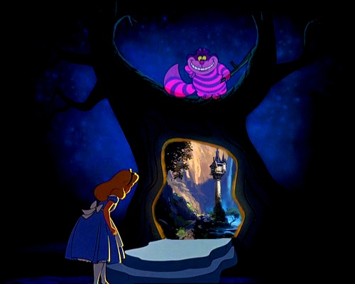

You decide to follow the left path, and it leads you to a breathtaking garden. Vibrant flowers of every color imaginable stretch as far as the eye can see, and a sweet fragrance fills the air. The garden seems alive, with dancing butterflies and singing birds.
As you explore the garden, you come across a hidden doorway at the base of a massive tree. It seems to beckon you to enter. What do you do?